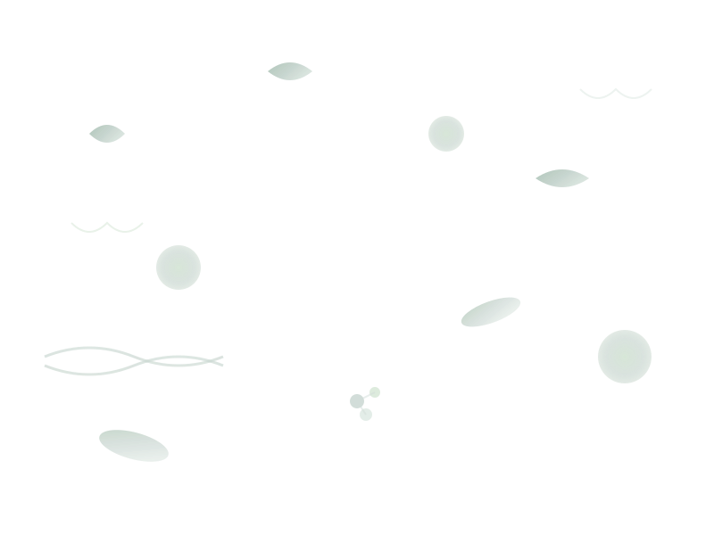

Posteos Educativos
Posteos crítico-analíticos sobre textos especializados en planificación curricular, metodologías innovadoras y más... desde la mirada de una docente de ciencias naturales.
Posteos crítico-analíticos sobre textos especializados en planificación curricular, metodologías innovadoras y más... desde la mirada de una docente de ciencias naturales.